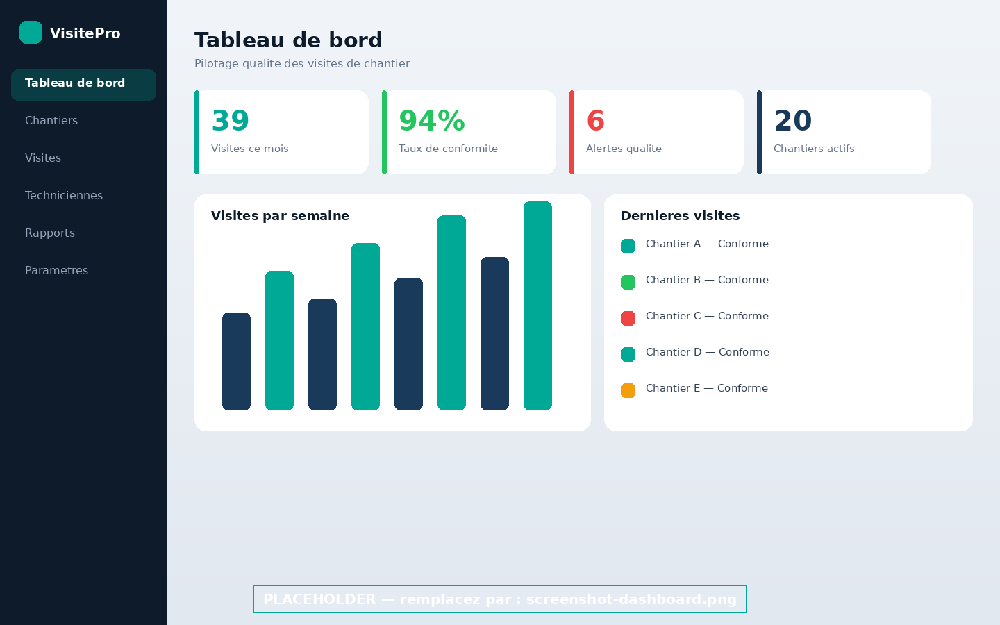
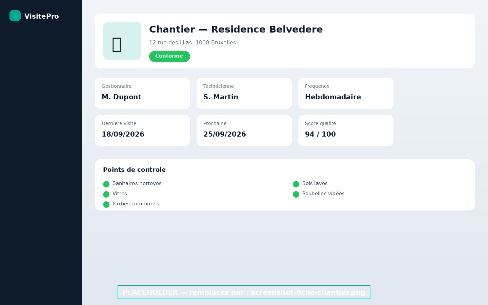
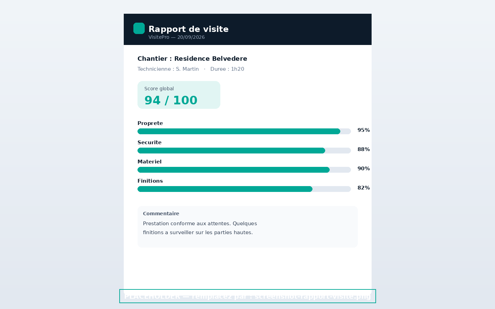
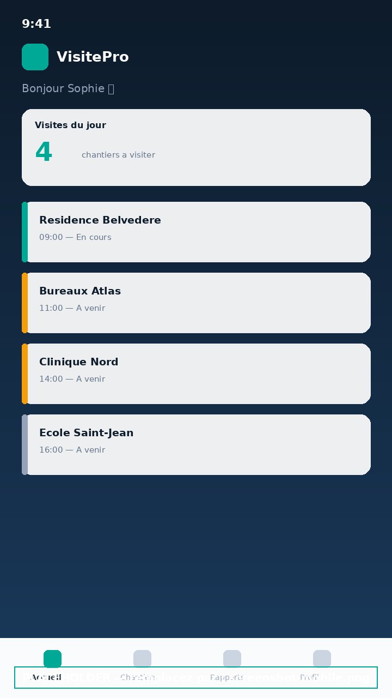

Planification des visites
Organisez les tournées, affectez les techniciennes et visualisez le planning de tous vos chantiers en un coup d'œil.
« Parce que chaque visite compte »
Fini les rapports papier, les contrôles oubliés et les clients dans le flou. VisitePro centralise la planification, le contrôle qualité et le reporting de vos visites de chantier — pour prouver la qualité de vos prestations, visite après visite.
Conçu pour les entreprises de nettoyage & facility services

De la planification à la restitution client, VisitePro couvre l'ensemble du cycle d'une visite de chantier dans une seule plateforme.
Organisez les tournées, affectez les techniciennes et visualisez le planning de tous vos chantiers en un coup d'œil.
Des grilles de contrôle personnalisables, avec photos, points de conformité et score qualité calculé automatiquement à chaque passage.
Générez des rapports de visite clairs et professionnels, exportables en PDF, pour rassurer vos clients et valoriser votre travail.
Suivez les affectations, la charge de travail et les interventions de chaque technicienne, sur le terrain comme au bureau.
Indicateurs en temps réel : visites réalisées, taux de conformité, alertes qualité et avancement par chantier.
Horodatage et géolocalisation des passages : prouvez que chaque visite a bien été réalisée, au bon endroit et au bon moment.
Du tableau de bord au rapport de visite, en passant par la fiche chantier : claire sur ordinateur, efficace sur mobile.



VisitePro s'adresse aux entreprises qui gèrent des prestations récurrentes sur de nombreux sites et doivent prouver, en continu, la qualité de leur travail.
Laissez-nous quelques informations : nous vous recontactons pour vous présenter VisitePro sur vos propres cas d'usage. Sans engagement.